收录于合集
作品简介
【作者】 迈克尔·贝克利（Michael Beckley），塔夫茨大学政治系助理教授，哈佛大学肯尼迪政府学院贝尔弗科学与国际事务中心研究员。
【编译】 李雯珲（国政学人编译员，南开大学周恩来政府管理学院）
【校对】 兰星辰；裘谷城
【审核】 丁伟航
【排版】 贺奕
【来源】 Beckley, M. (2018). The Power of Nations: Measuring What Matters. International Security , 43(2), 7–44.
期刊介绍
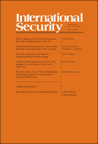
《国际安全》（ International Security ）是国际和国家安全领域的同行评议顶级学术期刊。它成立于1976年，由哈佛大学贝尔弗科学与国际事务中心（Belfer Center for Science and International Affairs at Harvard University）编辑，麻省理工学院出版社（MIT Press）每年出版四次。2018年影响力因子为4.500，在“国际关系”类别的85种期刊中排名第二位。
如何测量国家实力：中国真的赶超美国了吗？
The Power of Nations: Measuring What Matters
迈克尔·贝克利（Michael Beckley）
内容提要
编者按 国家实力的测量和对比是国际政治领域非常重要的议题。目前学界通常采用GDP或CINC（国家能力综合指数）来测量国家实力，但是这些指数都在一定程度上夸大了人口大国（如中国）的实力水平，而忽略了国家的成本和效率问题。作者提出的GDP×人均GDP指标，囊括了国家的资源占有量和利用效率两个维度，可以更加准确地测量国家实力。这一成果既是学术研究上的一大进步，更可以帮助我们更加清晰地认识中美实力差距，做出更加明智的战略选择。
在国际关系的研究与实践当中，最重要的问题莫过于： 是什么让有些国家比其他国家更加强大 ？由于均势在国际政治中的重要作用，为了实现均势，学者需要一种完善的方法来测量国家实力（power）；政策制定者更需要预估国家间相对实力来决定国家战略。但是， 实力是难以被观测的 ，且因时而变因地而殊。通常， 实力被定义为国家根据自己的利益塑造世界政治的能力 （ability），但是系统地测量这一能力需要剖析每个国家的利益和影响力，以及无数个国际事件，这很显然是不可能的。而且，对于政策制定者而言，基于事件结果评估出来的国家实力用处不大，因为这必须等待某一事件结束，而且结论只针对该事件，并不具有普遍性。
为了克服这一问题， 大部分学者根据国家拥有的资源来测量国家实力，特别是财富和军事资产 ，因为拥有更多财富和军事资产的国家与其他国家相比更有可能实现其目标。但是，在测量资源的时候，很多学者错误地采用了总指标（grossindicators），如国内生产总值（GDP）、军事支出和国家能力综合指标（Composite Indicator of National Capability, CINC）等。由于这些指标没有扣除国家用于安保、国防和社会福利部分的支出，因此在贫穷却人口稠密的国家，国家实力通常会被夸大。事实上，人口稠密的国家虽然能够拥有巨大产出，供养一支庞大的军队，但它同样要承担巨额的福利和安全开支，从而消耗了财富，牵制了军队，失去了可用于海外拓展的资源。
作者认为， 使用资源占有量测量国家实力是可行的，但是不应采用总指标，而应该采用净指标（net indicators ） 。计算净指标类似于给每个国家创建资产负债表（a balance sheet），资产归为一类，负债归为另一类，计算净资源就是用总资产减去总负债。作者提出了在定性定量研究中使用净指标的具体方法，并通过对过去200年间大国的兴衰和战争进行实证检验，证明 实力是由净资源决定的 （power is a function of net resources ） 。
这些发现具有两个重要影响。一方面，由于过去大部分学者都错误地使用总指标测量国家实力，因此 学者需要使用新的方法重新进行这些研究 。另一方面，关于“中国崛起”的言论被大肆宣传，以至于美国的朝野上下俨然深信不疑、严阵以待。但是， 如果用总指标减去国家需要付出的成本，美国的经济和军事实力仍然大大领先中国 。
本文分为八个部分。第一部分解释为什么学者要用资源测量国力；第二部分论述了学者要用净指标而非总指标测量资源；第三部分作者给出了具体的总资源和净资源的计算方法；第四到七部分作者通过案例和大数据检验了各指数的有效性；最后讨论了这些研究的意义。
文章导读
一、测量国家实力：基于资源而非结果
测量国家实力有两种主要的方法，最常见的是测量国家财富和军事资产的总和 。这是因为一方面，国家可以利用财富，通过国际援助、投资、举办世博会和运动会等方式增强国家影响力和软实力；另一方面，国家利用军事资源打击敌人、建立同盟。与此同时，一些学者拒绝采用 “资源 -实力”（power-as-resources approach ） 的方法，而是 基于事件结果测量国家实力（power-as- outcomes approach ） 。他们认为，实力就是国家在争端、谈判中获胜的能力，因此，可以通过观察国际事件（如战争和外交谈判）的结果来测量国家实力。
“结果- 实力”的方法具有一些优点。如这种方法可以明确在特定事件中国家的收益；在一些以弱胜强的案例中，这种方法可以解释非物质因素对事件结果的影响。但是，它的缺点也是显而易见的。第一，学者通常需要评估国家总体实力，即这种实力关系需要基于大量事件，但是“结果- 实力”方法只关注特定事件。第二，“结果-实力”方法只适用于分析已经发生的事件，而不能认识当下和预测未来。第三，“结果- 实力”方法有时会产生荒谬的结论。如越南战争中美国战败，但显然不能说明北越比美国强。实力并不是决定结果的唯一因素，结果还受到一些非物质因素的影响（比如意志、运气和智慧），“结果- 实力”方法把它们混为一谈，但“资源-实力”方法将实力和非物质因素进行了明确区分。
因此，作者采用“资源-结果”的方法测量国家实力，同时用事件结果数据检验不同资源指标的合理性。更确切来说， 作者想要知道，哪一种资源指标更加准确地勾勒出大国的兴衰、更加准确地预测国际冲突的赢家 。
二、测量国家资源：使用净指标而非总指标
许多学者采用总指标测量国家的资源，但是这会夸大人口丰富国家的实力，因为总指标只计算了人口多的好处，却忽略了人口多的代价 。大量人口在创造财富的同时，也在消耗财富。国家要想位居世界前列，就必须以低成本获得高产出。 国家的实力是减去成本之后的净资源。 这里的成本可以分为三类：生产成本、福利成本和安全成本 。生产成本指国家为了获得经济和军事产出必须投入的资源，经济上包括消耗的原材料和产生的污染等，军事上指为了训练士兵和研发先进军事技术而付出的成本。福利成本指国家用于维持人们生活的成本，如食物、医疗、社会保障和教育。安全成本指政府为了维护政权、打击犯罪和对外防御而支付的成本。显然， 社会生产、福利和安全都消耗了各国大量资源，衡量国家实力必须去掉这些成本，因此，应该使用净指标 。
三、实力指标
作者认为，当前广泛使用的一些测量经济和军事资源的指标都忽视了生产、福利和安全成本。 ****其中最常用的指标是国内生产总值，即 GDP，它纪录了在特定时间里一个国家所生产的商品和服务的总价值。很多人认为GDP可以置换（fungible）成军事、经济和政治的资源，是“旗舰指标”。但很少人认识到，GDP 并没有完全去除掉成本 。在生产成本方面，GDP忽视了生产效率和环境污染问题，即使是无用的支出也可以增加GDP。在福利成本方面，在GDP评价体系里，基本的食物支出和高科技产业利润没有区别。即使一个国家陷入马尔萨斯陷阱，人民的生存消耗了大部分产出，它的GDP也可以很高。最后，GDP将安全支出算在经济产出里面，而没有减去由于国内动荡和国际冲突产生的经济成本。除此之外，还有“战争潜力”（war potential）、国家能力综合指标（CINC）等都有类似的问题。 总之，所有的总指标都是一维的（one-dimensional ），它们只能测量国家拥有的资源规模，而忽视了资源利用效率问题。 ****
为了弥补上述指标的缺点，最理想的方法是减掉成本，直接计算经济和军事资源的净存量。如国家为了建造办公园区而砍掉一片森林，那么森林的价值就应该被记在国家收支表中的损失部分。但是该方法最大的问题是，要为每个国家编制这样的负债表将是一项庞大的工程。历史学家保罗 ·贝洛赫（Paul Bairoch）曾指出：“可以将人均GDP和GDP总量结合起来估计国家实力。”随后的研究证实， GDP 总量可以体现国家经济和军事产出总规模，而人均GDP 则反映了经济和军事的效率，将二者综合起来便可以囊括净资源的规模和利用效率这两个重要维度 。由此，作者提出， 用GDP 乘以人均GDP 来测量国家实力 。
四、研究设计
作者通过三种方法对比国际政治中总资源和净资源的区别。
第一， 作者对大国竞争案例进行检验 。选取案例的标准是两个大国长期竞争，且一国在总资源上占优势，另一国在净资源上占优势。
第二，作者使用大量数据来评估上述指标（GDP、CINC、GDP×人均GDP） 在预测国际冲突和战争结果时的准确性 。
第三， 作者用三种衡量指标复制了部分现有的国际关系模型，分别测算三种指标的样本内适合度 （ In-sample goodness-of- fit）。作者认为，指标的适合度越高，就能容纳更大的数据方差，因此学者应采用适合度更高的指标。
五、案例研究
根据作者的标准，自1816年以来，共有14组大国竞争持续了25年以上。作者对此进一步筛选出总资源和净资源对比差异最大的几组。作者通过计算每组竞争对手中一国GDP和CINC占两国总和的比例来衡量两国总资源的对比情况：
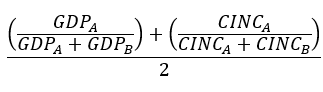
通过计算该国的GDP×人均GDP在两国之和中的占比来衡量净资源的对比情况：
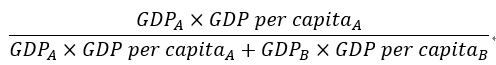
上面两个式子相减取绝对值，就可以得到 某年某一竞争对手的总资源占比和净资源占比的差额 ：
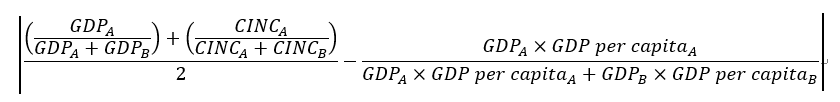
根据上面得到的数值对14组竞争大国进行降序排序得到下表：
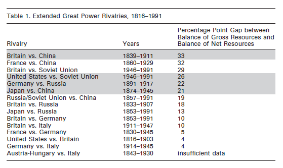
由于空间限制，作者选择了差值在20以上的几组；又由于19世纪后半期到20世纪初，中英竞争为主导，中法竞争为从属，冷战期间英苏竞争也是从属于美苏竞争，因此作者将这两个时期的中法竞争组和英苏竞争组排除掉，剩下四组作为案例研究对象。
值得注意的是，总资源和净资源相差最大的前九组案例中，都有中国和俄罗斯（沙俄/苏联）的身影。这并不奇怪，因为只有中俄在过去两百年中总资源领先世界但净资源落后于其他大国。中俄和其他规模虽小但水平更先进的国家相互竞争的经历，更能印证作者“净资源决定实力”的主张。
（1）英国 vs中国，1839-1911
从传统指标来看，中国似乎是 19世界和20世纪初的超级大国，直到19世界90年代，中国都是世界上GDP和军队规模第一位的国家，而第二名的位置也保持到了20世界30年代。 然而在此期间，中国却遭受到 “世纪之耻”，失去许多重要领土和大部分主权。其中最重要的两场战争是和英国的两次鸦片战争。第一次鸦片战争的导火索是中国的禁烟运动，最终以中国战败、中英于1842年签订《南京条约》告终。随后，英国不满于既得利益，1856年，第二次鸦片战争爆发。中国节节败退，先后与英法签订《天津条约》和《北京条约》。
显然，在这两次鸦片战争中，英国要比中国更加强大 。如果从总指标来看，中国的GDP和国防预算都是英国的两倍，中国军队有八十万人，而英国只派了七千人远征中国。但是， 只有把成本计算进去，才能发现中国的软肋 。从下图可以看出，虽然中国的GDP总量远高于英国，但是 中国有巨大的生产、福利和安全成本，这使其只能将较少的资源投入到各种纠纷和战争中 。按照作者方法（GDP×人均GDP）比较两国净资源，可以看出中国远远落后于英国。
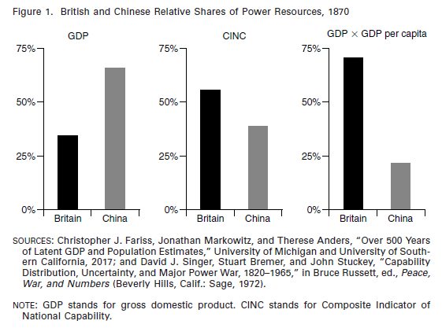
中国的成本具体包括以下三个方面 。第一，中国的生产效率远低于英国。与中国工人相比，英国的工人更加健康且受教育程度更高，再辅以英国先进的生产技术，他们的生产效率远高于中国工人。第二，中国庞大的人口规模（是英国人口的13倍）造成了大量的福利成本。第三，国内动荡大大增加了中国的安全成本。一边是频繁的起义和高昂的军费，另一方面清政府又要以低税收安抚地方长官，这使清政府陷入严重的财政危机。
中国看似拥有庞大的军事资源，但生产、福利和安全成本使之几近枯竭。中国军队装备严重落后，战斗力低下，而且镇压国内叛乱和边防的需要消耗了大量军事资源，这些使得中国注定失败。
（2）日本 -中国，1874-1945
在19世纪下半叶，日本奋发图强，立志摆脱隔壁大清的命运，并开始向东亚大陆扩张。1894年通过《马关条约》攫取辽东半岛、台湾和澎湖列岛，以及朝鲜的宗主权，迫使中国予其通商权利，以及巨额赔款（注：共计2.3亿两白银）；随后，日本在一战中站在协约国一方，攫取了德国控制的山东青岛，并得寸进尺，向北洋政府提出“二十一条”，虽经美国干涉，但仍然获得其中四条，攫取了重大利益；1932年扶植伪满洲国；1933年控制河北、热河；1934年宣布东亚为其势力范围，列强不得单方面保护中国；1937年全面侵华，旋即占领大片疆土；在偷袭美国后，兵锋受挫，最终于1945年彻底失败。
显然，在 19世纪晚期和20世纪早期，日本比中国更加强大。 但是，从传统的标准指标上看，中国比日本拥有更多的资源， 其人口，GDP和军队都强于日本数倍。 但日本比中国更加有效率，其人口成本、福利成本和安全成本都低于中国 ，因此，其所能动员的净资产远高于中国。
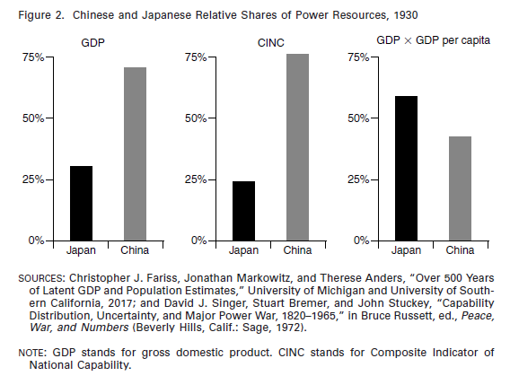
中国落后于日本是多方面的。 ****
首先 ，日本的工业实力，无论是劳动生产率，钢铁产量还是丝绸市场占有率，均远高于中国。
其次 ，日本的福利成本更低。彼时的中国几乎不能养活其人口。而日本的经济发展速度高于人口增长率，不仅能够养活人口，而且还有足够余量来支撑起现代化投资。同时，中国的农业人口远远多于日本，而日本则有更多的产业人口。
最后 ，安全成本大不相同。中国的军费开支连同支付给列强的赔款严重消耗了政府财政，而日本政府却不受军费所累，还能从中国攫取巨额赔款，足够补偿战争开支。同时，中国军队给养奇缺，装备低劣，训练不足，指挥无方，而日军则是给养充足，装备精良，训练有素，经略有方。再者，中国军队需要应对动荡不安的国内局势，部署分散，不能全力抗击日军。
（3）德国 -沙俄，1891-1917
此二者的比较有如中日比较，请看下图：
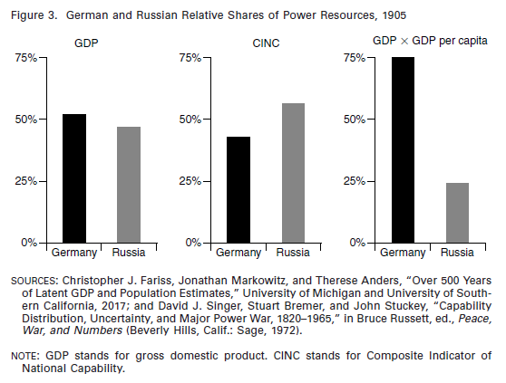
（4）美国 -苏联，1946-1991
二战中苏联损失惨重，但是随着轴心国崩溃，苏联吞并大量领土，实力得到增强。到1945年苏联已经是欧洲最强大的国家；50年代苏联被视为与美国比肩的超级大国；70年代，苏联在CINC、军队规模和核武器等多方面都领先世界。 1977 年，美国中央情报局苏联问题首席专家雷·克莱因（Ray Cline ）认为苏联的实力是美国的两倍，且仍在增长。
但是，从 20世纪70年代到1991年，苏联遭受了一系列重大挫折，包括从阿富汗溃退、接受严苛的军控条约、经济被迫部分开放、失去欧洲所有加盟国和二百万平方英里的领土，直至1991年苏联解体，世上仅留美国一个超级大国。
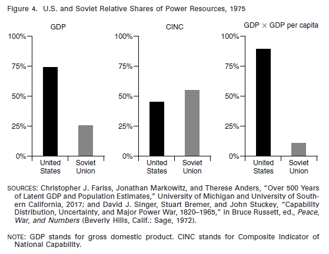
从上图中可以看出， 尽管苏联体量庞大，但是缺乏效率，被繁重的生产、福利和安全成本拖累。 第一 ，上世纪七、八十年代，苏联经济的表现在世界上居于末流：生产力增长为负，单位产出率持续下降，甚至是世界上第一个在和平年代预期寿命下降、婴儿死亡率上升的工业化国家。同时期美国的高科技产业突飞猛进，苏联却止步不前。 第二 ，苏联社会福利成本高昂，社会救济支出占财政收入的一半，而美国只有10%。 第三 ，在安全成本方面，苏联的国防支出占据预算的40%、GDP的15%到20%，至少是美国的四倍。此外，苏联还要花费GDP的2%到4%来支援盟国，而美国的对外援助只占GDP的0.3%。 第四 ，由于高昂的生产、福利和安全成本，苏联军队技术落后、管理体制僵化、士兵训练不足、武器装备严重落后，这些大大削弱了其战斗力。 最后 ，或许也是最重要的一点，苏联面临严重的外部安全威胁。20世纪80年代，美国的盟友是苏联的六倍，人口和总资源是苏联阵营的三倍。苏联耗费大量资源来防御外敌和阻止内部分裂，而美国在这方面显然拥有更大的余地来配置军事能力
六、 1816-2010年间的战争和争端结果
上述的分析只包括世界上少数几个大国，为了增强研究的可信度， 作者又考察了 1816-2010期间发生的所有争端和战争，这些分析进一步证明实力根源于净资源而非总资源。
在战争方面 ，为了便于确定参战方的实力，作者把COW国际战争数据库（Correlates of War’s Interstate Wars dataset）中的联盟战争排除在外， 只考虑纯粹的双边战争 。在冲突方面，作者利用COW国际军事冲突数据库（Correlates of War’s Militarized Interstate Dispute dataset）。由于一些冲突并没有明确的胜负之分，作者只选取了结果明确的双边冲突。在收集到数据后，作者分别用GDP、CINC和GDP×人均GDP三种方法计算冲突和战争双方的实力，来检验哪种方法对结果有更强的预测能力。
表2展示了每种指数的成功率（即在国际争端和战争中，GDP、CINC或GDP×人均GDP更大的一方获胜的概率）。结果显示， 不论是战争还是冲突，计算净资源的准确率都比计算总资源的准确率要高。 ****作者还关注到， 3种指数预测战争结果的准确率都高于各自预测国际争端的准确率，他认为这可能是因为争端的规模一般比较小，不会像战争那样纯粹是实力的较量。
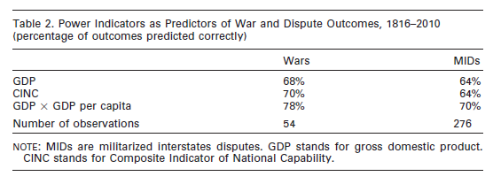
七、复制分析
为了验证自己的测量国家实力的方法适用于国际关系研究的多个领域而不仅局限于冲突和战争，作者进行了复制分析 。作者选取了2012年1月至2017年4月发表在七份政治学顶级期刊上的文章，其中24项研究为国家相对实力设置了控制变量，且数据已经公开。 这些研究涉及核扩散、恐怖主义、贸易等多个领域。 ****作者分别用 CINC、GDP和GDP×人均GDP计算出相对实力作为变量，对每项研究里的主要模型进行了重复分析，并用赤池信息量准则Akaike Information Criterion (AIC)检验模型的适合度。AIC常用于模型选择，其值越低，适合度便越高。检验出来的数据详见本文的在线附录。
结果显示， **24 项研究中有17项，使用GDP乘以人均GDP作为指标测算出来的适合度，比使用CINC作为指标更高。**在这17项当中，平均AIC差值（两种指标测算结果的差值）是6。这意味着使用CINC的模型减少信息损失的平均概率是使用GDP乘以人均GDP的模型的0.05倍。一般来说，平均AIC差值大于2，意味着统计意义上有较为显著的证据表明，某一模型比另一模型更加出色。根据这一标准，17项中有11项使用GDP乘以人均GDP的模型较为显著。3项显示两种模型同等显著。剩余四项显示，使用CINC的模型更为显著。
此外， **24 项研究中有11项表明，使用GDP乘以人均GDP的模型比单纯使用GDP的模型更加适合。**其中有8项的平均AIC差值大于或等于2。有7项表明两种模型同等适合。另外有6项表明单纯使用GDP的模型更加适合。
结果显示， 与传统总指标相比，使用作者的净指标可以在一系列新近的国关研究中增强模型的适合度。 由于样本较小，这还并不足以证明净资源就能决定实力（power is a function of net rather than gross resources）。但是，本文的样本研究结果起码和作者提出的命题大体一致，同时还与范围更窄的一个命题相符： 和 GDP或CINC相比，GDP乘以人均GDP是一个能够更加出色地衡量相对实力的单一变量指标。
**
**
八、结 论
作者认为，测量国家实力，应该根据该国的净资源，而不是总资源 。作者提供了一种粗略但有效的指标来测量国家实力，并证明这一指标比广泛使用的总指标更为准确。作者的这一研究结果具有两个重要意义。
一方面，以往的大量国际关系研究都是基于有缺陷的实力概念。 ****比如，有的研究采用 CINC作为测量实力的指标，但根据这一指标，以色列将会是中东最弱小的国家。这是很荒谬的结论。如果用新的更准确的方法重新进行测量，这些研究的结论也许会发生重大变化。
另外，权力转移理论也值得重新审视。 ****自上世纪 90年代，特别是2008年金融危机以来， “中国崛起论”就备受推崇。 许多人认为，美国的实力优势正在被削弱，中国的崛起将推动世界变成多极格局 。但是，这一观点的缺陷在于，它是基于中美两国总资源的对比。19世纪中叶，中国的经济和军事规模都领先世界，但是，也就在这一时期，中国遭受了世纪之耻。 如今的中国虽然得到了很大的发展，但是其要成为超级大国仍然还有很长的路要走。 ****中国的国际负债位居世界前列，此外，中国还受到资源消耗、环境污染、产能过剩、学术造假、巨大的国内外安全压力等问题的困扰。中国的经济投入产出比只有美国的七分之一，而且中国周边的 19个国家里，大多对其持敌视态度。
如下图所示，如果只看GDP或CINC，中国似乎已经是世界上最强大的国家； 但是如果根据作者或联合国、世界银行的测量净资源的指标，中国仍远远落后于美国，而且在可预见的一段时间内仍将保持如此。
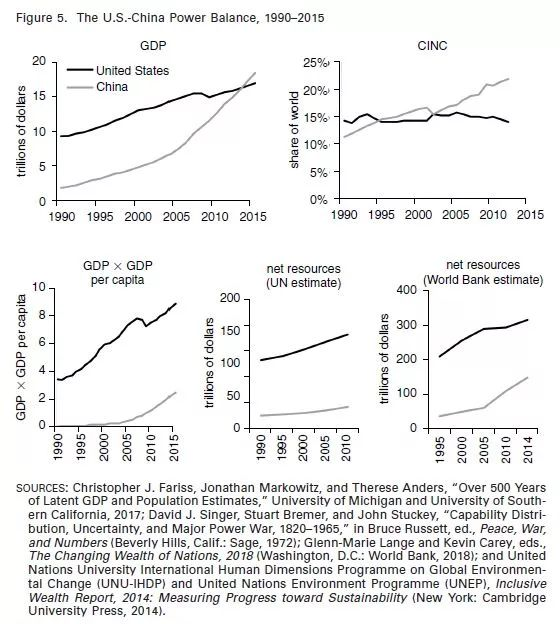
最后，作者指出，大量的研究聚焦于实力的效果，却对实力的测算着墨甚少，以至于测算不准。 实力是国际政治领域的核心变量 ，学者们却仍然缺少测算实力的可靠指标。补足这个缺漏刻不容缓。
_ ** _ ** _ ** _ 本文由国政学人独家编译推荐**__
扫下方二维码查看往期精彩
【新刊速递】第01期 | Review of International Studies Vol.45, No.4, 2019
【新刊速递】第02期 | International Relations Vol.33, No.3, 2019
【新刊速递】第03期 | International Organization Vol.73, No.3, 2019
点“在看”给我一朵小黄花